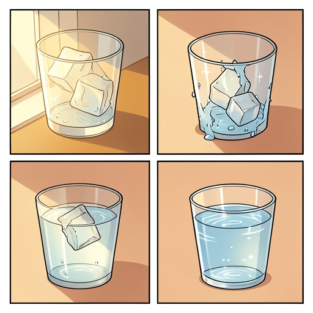
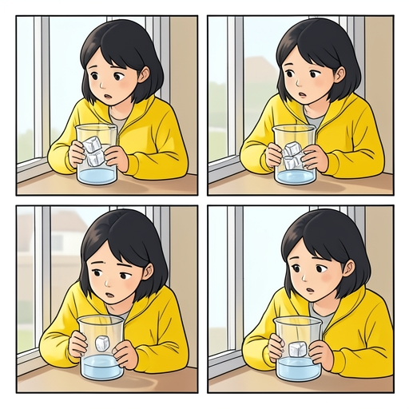
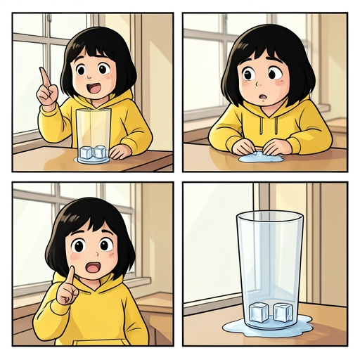
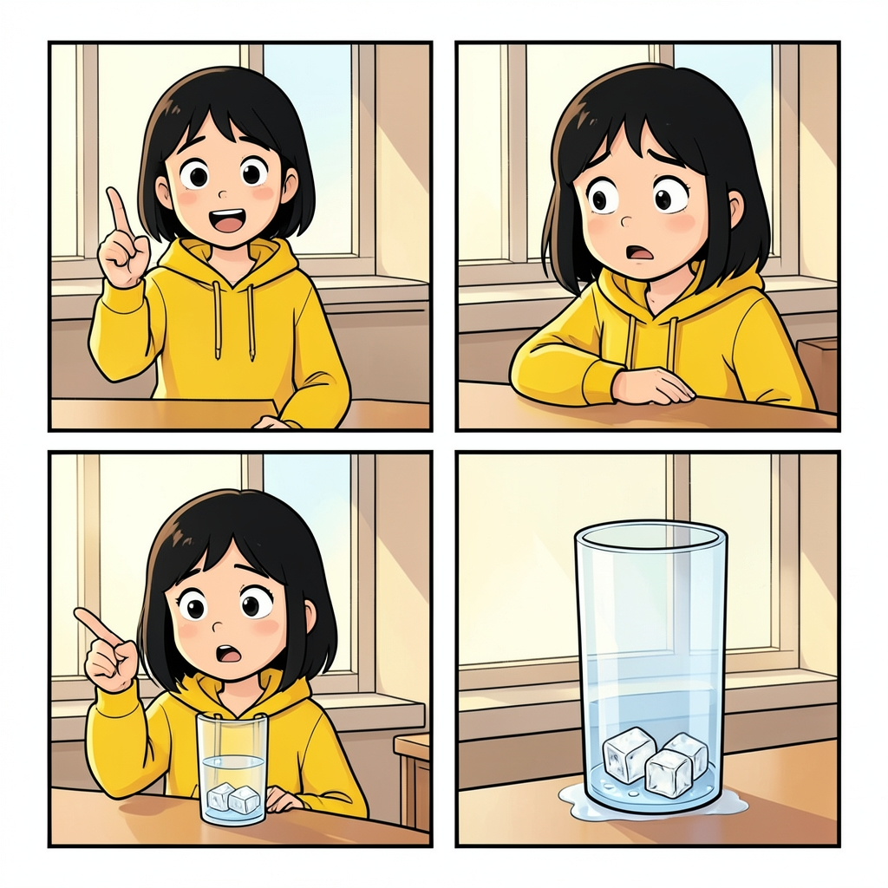
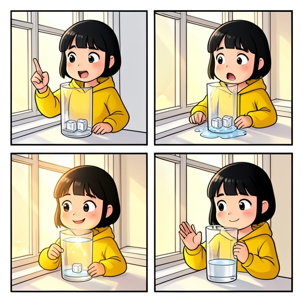

Лаборатория SANA · 6 ноября 2026
Четыре кадра на одной странице
Настоящие результаты FLUX.2 klein 4B из Cloudflare. Один рисунок содержит сразу четыре сцены. Все изображения показаны без ретуши; ни одна модель в этом сравнении ещё не дообучена.
Проверка стоимости пройдена; проверка учебной точности — пока нет. Картинки получаются недорогими, но генератор меняет важные детали. На ошибочных рисунках обучение не запускалось.
В полном измеренном прогоне Qwen сообщил 76,797 Neurons за сценарий и исправление описаний. Картинка 512×512 добавляет по тарифу 26,05: всего примерно 102,85. Это один пример, а не средняя стоимость или гарантия дневной вместимости.
Сайт · Qwen + FLUX · 512×512
Исходная цепочка

26,05 на изображение; полный расход текста не записывался Neurons
Сетка из четырёх кадров соблюдена, но героини нет. В финале воды больше, чем могли дать показанные кубики. Реплики почти не создают историю.
Qwen + FLUX · 512×512
Усиленные инструкции

≈102,85 за текст, исправление описаний и картинку Neurons
Персонаж появился, но в финале остался лёд, хотя сценарий требует только воду. В тексте есть неверная формулировка «лёд … в жидком состоянии».
Текст подготовлен вручную · 512×512
Выверенный сценарий

26,05 за изображение, без вызова Qwen Neurons
Лица выразительнее, но стакан исчезает во втором кадре, а в последнем снова возникает лёд. Эти изображения не подходят в качестве эталонов для обучения.
Тот же сценарий и seed · 1024×1024
Проверка разрешения

104,20 за изображение, без вызова Qwen Neurons
Детализация выше, но стакан отсутствует в первых двух кадрах, а в финале опять лёд. Большее разрешение не исправило содержание в этом тесте.
Текст подготовлен вручную · 512×512
Короткое описание страницы

26,05 за изображение, без вызова Qwen Neurons
Лучший из этих вариантов по сюжету и эмоциям: в финале лёд исчез. Но вода вылилась за пределы стакана во втором кадре, а её уровень меняется без причины. До учебного качества ещё нужно доработать.
Оригинальный сценарий для проверки · 4 класс
Миссия: сохранить лёд
Этот вариант написан вручную как направление для будущего набора примеров. Юмор ещё не оценивался школьниками. Короткое описание картинки соответствует последнему тесту выше.
- План на перемену
Лёд, держись до звонка!
Алия ставит стакан на тёплый подоконник: здесь лёд получает тепло.
- План начал таять
Я же просила держаться…
Получая тепло, твёрдая вода — лёд — превращается в жидкую.
- Разгадка на подоконнике
А, тут слишком тепло!
В стакане пока есть вода в двух состояниях: лёд и жидкость.
- Сохранён только план
Мой план сохранился. Лёд — нет.
В холодном месте лёд получал бы меньше тепла и сохранился бы дольше.